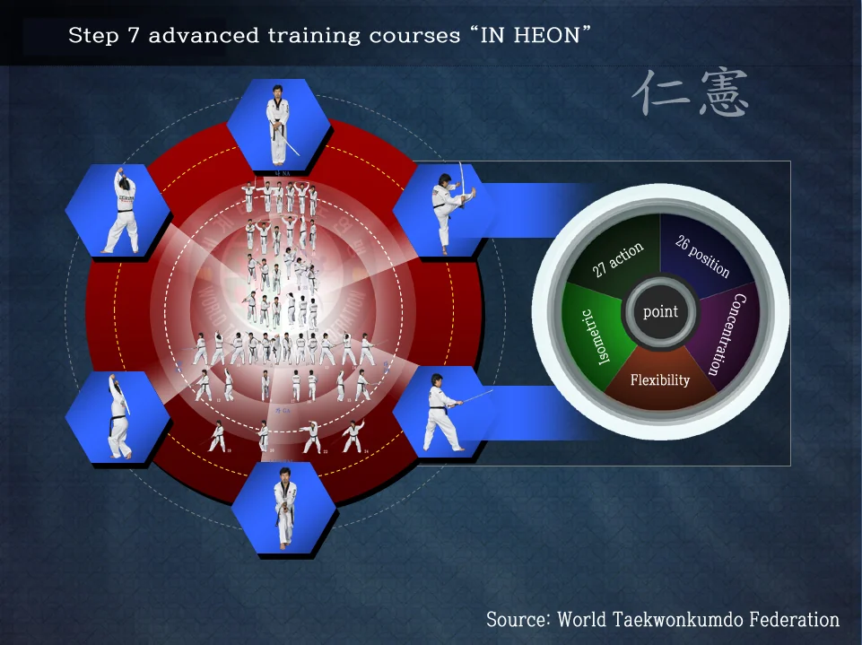
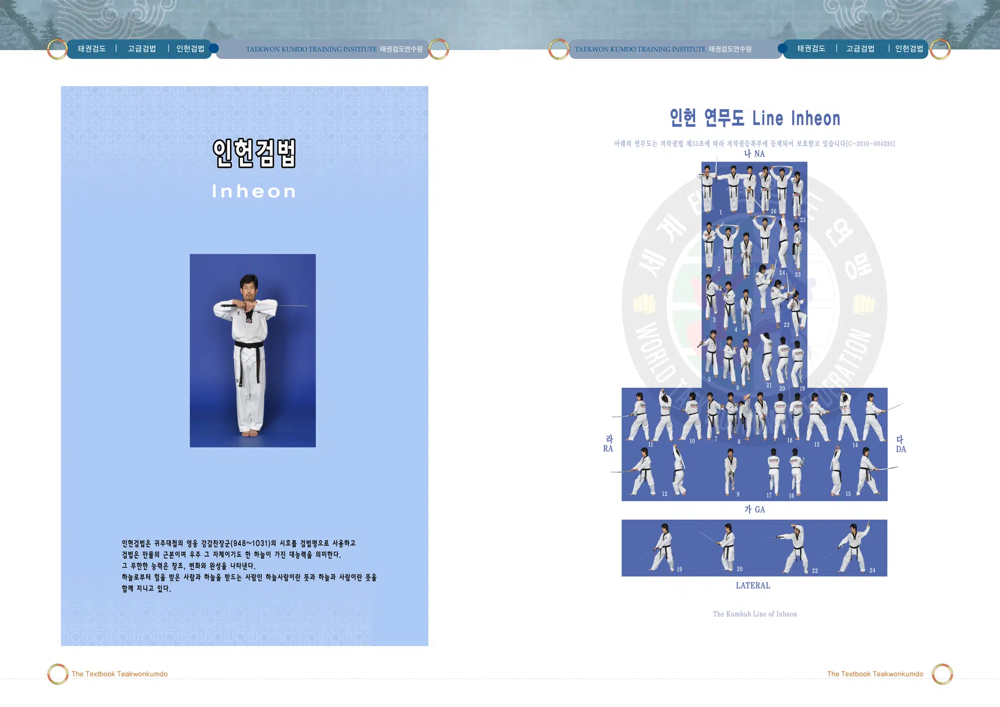
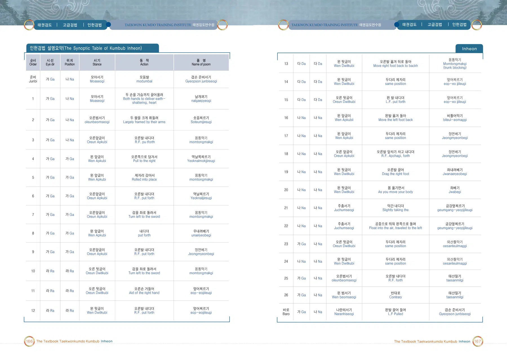
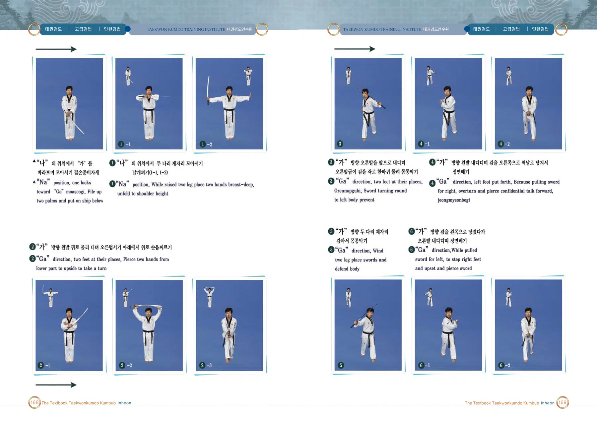
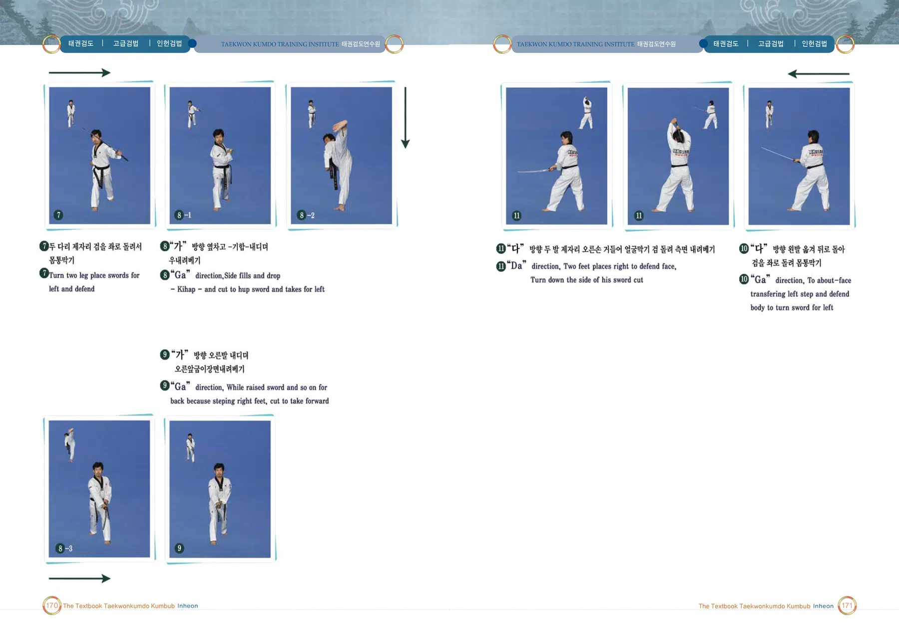
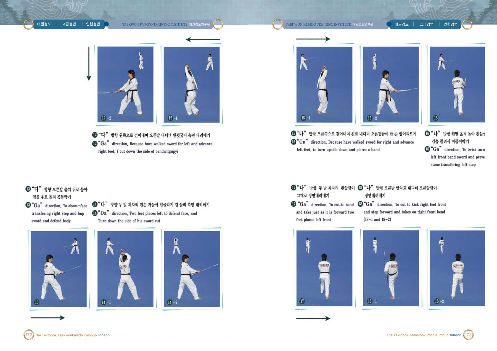
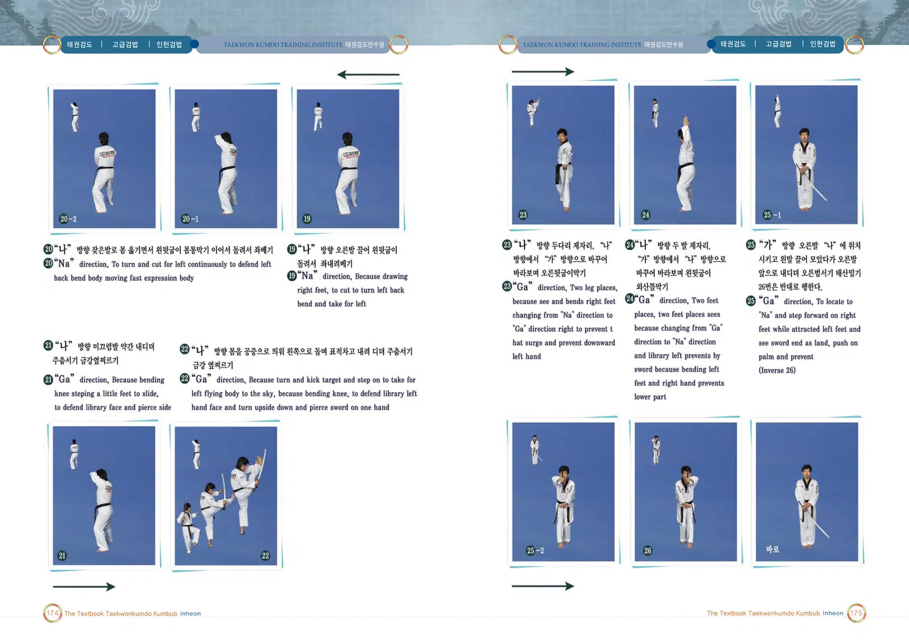

인헌검법
강감찬 장군의 시호에서 이름을 따온 검법
출처: 태권검도 교본. 아래 설명은 제공된 초안의 뜻풀이 요약이며, 원문은 교본 이미지에서 확인할 수 있습니다.
인헌검법의 뜻과 상징
귀주대첩의 강감찬 장군의 시호를 명칭으로 사용한다. 하늘의 창조와 변화, 완성의 능력을 상징하는 검법이다.
태권검도 교본 인쇄 282쪽의 설명을 바탕으로 요약한 해설입니다.
인헌검법 표준 정의
인헌검법은(는) 세계태권검도연맹의 태권검도 역사 인물 검법 교육체계에 속하는 검법이다. 귀주대첩의 강감찬 장군의 시호를 명칭으로 사용한다. 하늘의 창조와 변화, 완성의 능력을 상징하는 검법이다.
검법 체계 창시자: 전성권 · 출처: 태권검도 교본 282쪽 · 교육체계: 역사 인물 검법 9종
공식 연무도(검형)
인헌검법 · 7단
이미지를 누르면 확대됩니다.

창시자 전성권 · 출처: 세계태권검도연맹(WTKF)
인헌검법 교본 자료
이미지를 누르면 확대됩니다. 확대 화면에서는 좌우로 이동하여 동작과 설명을 확인하세요.





